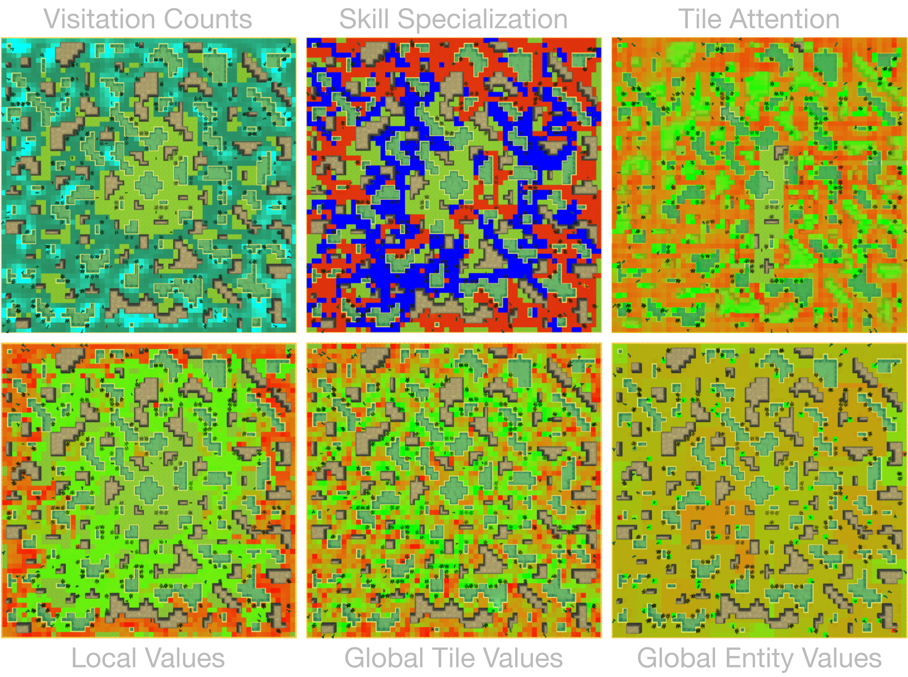

Introduction¶
Introduction¶
[Demo Video] | [User API] | [Github] | [Discord] | [Twitter]
Neural MMO is a computationally accessible research platform that simulates populations of agents in procedurally generated virtual worlds. Users select from a set of provided game systems to create environments for their specific research problems – with support for up to a thousand agents and one square kilometer maps over several thousand time steps. The platform provides a Python API for scripting agents, [RLlib] integration for reinforcement learning approaches, an evaluation suite for comparing and interpreting agent policies, and an interactive 3D client packed with visualization tools. The guides below contain everything you need to get started. We also run a community [Discord] for support, discussion, and dev updates. This is the best place to contact me.

Abstract: Progress in multiagent intelligence research is fundamentally limited by the complexity of environments available for study. Neural MMO is a massively multiagent AI research environment inspired by Massively Multiplayer Online (MMO) role playing games – self-contained worlds featuring thousands of agents per persistent macrocosm, diverse skilling systems, local and global economies, complex emergent social structures, and ad-hoc high-stakes single and team based conflict. Our goal is not to simulate the near-infinite physical processes of life on Earth but instead to construct an efficient facsimile that incentivizes the emergence of high-level social and general artificial intelligence. To this end, we consider MMOs the best proxy for the real world among human games.
Installation¶
- New in v1.5.2:
Create a file wandb_api_key in the repo root and paste in your WanDB API key. This new integration is now so important to logging and evaluation that we are requiring it by default. Do not commit this file.
We coincidentally now require ray v1.5.2 (not v1.6). You will have to make one small change to the rllib metrics file (usually ~/anaconda3/lib/python3.8/site-packages/ray/rllib/evaluation/metrics.py): add custom_metrics[k] = filt; continue after line 175.
Tested on Ubuntu 20.04, Windows 10 + WSL, and MacOS
git clone https://gitlab.aicrowd.com/neural-mmo/neural-mmo-starter-kit
pip install neural-mmo
git clone --single-branch --depth=1 --branch master https://github.com/jsuarez5341/neural-mmo
cd neural-mmo && bash scripts/setup.sh
git clone --single-branch --depth=1 --branch v1.5.2 https://github.com/jsuarez5341/neural-mmo-client
#If not on WSL:
mv neural-mmo-client neural-mmo/forge/embyr
- Troubleshooting:
Post installation errors in #support on the [Discord]
If you are training on GPU and get an IndexError error on self.device, set gpu_ids=[0] in ray/rllib/policy/torch_policy.py:150 (typically in ~/anaconda3/lib/python3.8/site-packages)
Most compatibility issues with the client and unsupported operating systems can be resolved by opening the project in the Unity Editor
If you want full commit history, clone without
--depth=1(including in scripts/setup.sh for the client). This flag is only included to cut down on download timeThe master branch will always contain the latest stable version. Each previous version release is archived in a separate branch. Dev branches are not nightly builds and may be flammable.
CLI¶
Forge is the main file for the included demo and starter project (/projekt). It includes commands for map generation, training, evaluation, visualization, and rendering. To view documentation:
python Forge.py --help
NAME
Forge.py --help - Neural MMO CLI powered by Google Fire
SYNOPSIS
Forge.py --help - COMMAND
DESCRIPTION
Main file for the RLlib demo included with Neural MMO.
Usage:
python Forge.py <COMMAND> --config=<CONFIG> --ARG1=<ARG1> ...
The User API documents core env flags. Additional config options specific
to this demo are available in projekt/config.py.
The --config flag may be used to load an entire group of options at once.
Select one of the defaults from projekt/config.py or write your own.
COMMANDS
COMMAND is one of the following:
evaluate
Evaluate a model against EVAL_AGENTS models
generate
Generate game maps for the current --config setting
render
Start a WebSocket server that autoconnects to the 3D Unity client
train
Train a model using the current --config setting
Generate Environments¶
Configuration¶
We recommend that new users start with one of the default configurations provided with the environment. Similarly, competition participants should start with the configuration provided for the current round.
Experienced users can create custom environments that are better suited to their specific research interests. We further recommend reviewing the game wiki’s description of the vanilla mechanics before heavily modifying them. Enable a specific set of game systems by inheriting from their respective configs, in addition to the base class. For example:
class ExampleSelectGameSystemsConfig(SmallMaps, config.Resource, config.Progression):
pass
Customize each game system by overriding exposed config properties:
class ExampleCustomizeGameSystemsConfig(SmallMaps, config.Resource, config.Progression):
# Example core config customization
NMOB = 512
NENT = 128
# Example terrain generation customization
TERRAIN_CENTER = 512
TERRAIN_WATER = 0.40
TERRAIN_GRASS = 0.55
# Example progression system customization
PROGRESSION_BASE_XP_SCALE = 10
PROGRESSION_CONSTITUTION_XP_SCALE = 2
A full list of config properties is available here:
Procedural Terrain¶
Once you have selected or written a config, you will need to generate maps for training and/or evaluation. Generating image previews of each map can be useful in certain circumstances, but note that this will take additional space and time. The previews for max sized maps are huge, so we’ll only generate PNGs for smaller ones.
python Forge.py generate --config=SmallMaps --TERRAIN_RENDER
python Forge.py generate --config=LargeMaps
Generating 256 training and 64 evaluation maps:
100%|████████████████████████████████████████████████| 320/320 [01:35<00:00, 3.34it/s]
Generating 256 training and 64 evaluation maps:
100%|████████████████████████████████████████████████| 320/320 [09:53<00:00, 1.85s/it]
Generating small maps without rendering takes 5-10 seconds on a modern CPU.
Example map from resource/maps/procedural-small/map1/map.png¶
Terrain generation is controlled by a number of parameters prefixed with TERRAIN_. The config documentation details them all, and you can experiment with larger modifications to the procedural generation source in neural_mmo/forgeblade/core/terrain.py.
Create Policies¶
Scripted API¶
Neural MMO provides compact tensor observations that are difficult to integrate with scripted policies and change from version to version. We therefore provide a simple wrapper class that enables users to extract named attributes without direct dependence on the underlying structure of observations, documented here:
We will occasionally modify the set of available attributes. In these instances, we will publish upgrade scripts where possible and lists of larger changes requiring individual attention where needed.
Each Neural MMO release will include a set of [scripted baselines]. You may find these useful as references for creating your own models. You are also free to leverage any of the utility classes included with these baselines, but do note that these are not part of the official API and may change from version to version.
RLlib Integration¶
The baseline model and associated training and evaluation code in projekt/rllib_wrapper.py demonstrate how to use RLlib with Neural MMO. Note that RLlib is not a hard dependency of the platform: Neural MMO provides an otherwise-standard Gym interface extended for multiagent. That said, all of our trained baselines rely on RLlib, and we strongly suggest using it unless you fancy writing your own segmented trajectory collectors, hierarchical observation/action processing, variable agent population batching, etc.
To re-evaluate or re-train the pretrained baseline:
python Forge.py evaluate --config=CompetitionRound1
python Forge.py train --config=CompetitionRound1 --RESTORE=None
If a job crashes, you can resume training with –RESUME=True –RESTORE=None
Evaluate Agents¶
Evaluation in open-ended massively multiagent settings is akin to that in the real world. Unlike in most single-agent and some multiagent environments, there is no absolute metric of performance. We therefore provide two evaluation options: tournaments, which measure relative performance against various opponents, and self-contained simulations, which measure qualitative behaviors.
Tournaments¶
This evaluation mode is the default as of v1.5.2 and is being used in the current competition. Agents train against many copies of themselves but are evaluated against scripted opponents with different policies. As of this minor update, these evaluation tournaments are run parallel to training, allowing you to monitor progress relative to scripted baselines in real time. You can submit your agents to the live AICrowd competition for evaluation against other users. After the competition, we will integrate additional users’ bots (provided we are able to obtain permission to do so) into the main repository.
Self-Contained¶
This is the classic evaluation setup used in older versions of Neural MMO measures policy quality according to a number of summary stats collected over the course of training. It suffers from a lack of ability to compare policies directly, but it is still well-suited to artificial life work targeting emergent behaviors in large populations. These statistics are automatically sent to WanDB.
Evaluation Distribution¶
Neural MMO provides three sets of evaluation settings:
Training Maps: Evaluate on the same maps used for training. This is standard practice in reinforcement learning. Enable by setting the GENERALIZE flag to False
Evaluation Maps: Evaluate on a set of held-out maps drawn from the training map distribution generated using different random seeds. This is the default setting
Transfer Maps: Evaluate large-map models on small maps (hard) or small-map models on large maps (very hard). Enable by setting the appropriate –config
Rendering and Overlays¶
v1.5.2: Overlays are broken due to a Ray Tune bug. We’re working on fixing this and have pushed the version regardless because of the importance of Ray Tune and WanDB evaluation. We’re working on this. In the meanwhile, you can copy your checkpoint files over to a v1.5.1 install if needed. The models are compatible, and the v1.5.2 client should work fine too.
Rendering the environment requires launching both a server and a client. To launch the server:
python Forge.py render --config=CompetitionRound1
The server will take a few seconds to load the pretrained policy and connect to the client.

You should see this view once the map loads¶
The on-screen instructions demonstrate how to pan and zoom in the environment. You can also click on agents to examine their skill levels. The in-game console (which you can toggle with the tilde key) give you access to a number of overlays. Note that the LargeMaps config requires a good workstation to render and you should avoid zooming all the way out.
The counts (exploration) overlay is computed by splatting the agent’s current position to a counts map. Most other overlays are computed analogously. However, you can also do more impressive things with a bit more compute. For example, the tileValues and entityValues overlays simulate an agent on every tile and computes the value function with respect to local tiles/entities. Note that some overlays, such as counts and skills, are well-defined for all models. Others, such as value function and attention, do not exist for scripted baselines.
Writing your own overlays is simple. You can find the source code for general overlays (those computable by scripted baselines) in neural_mmo/forgetrinity/overlay.py. RLlib-specific overlays that require access to the trainer/model are included in projekt/rllib_wrapper.py. Details are also included in the User API.